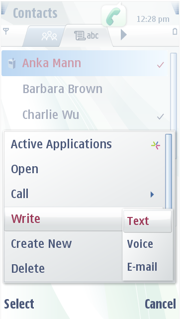
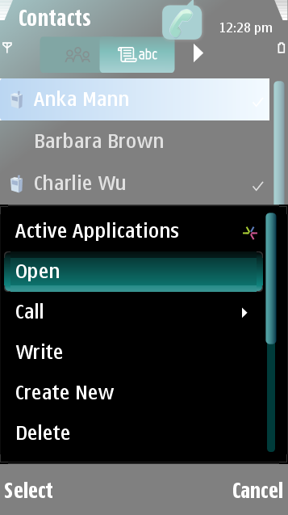

Pop-up Windows
Pop-up windows are used in certain dialogs. Carbide.ui
contains the following pop-up window options:
General
Window
This includes, for example, the Submenu Pop-up Window Graphic, which is
the pop-up menu on top of the General Window pop-up menu.
Call
Handling Window
This includes, for example, the Conference Call Indications pop-up
menu.
Lower
Screen Area
This is the lower screen area of the phone's screen, which
is controlled with the soft keys of the phone.
 
Figure:
Default and customized
pop-up windows